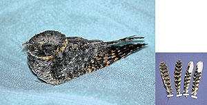

|  |
|
Figure 4. Buff-collared Nightjar, Caprimulgus ridgwayi (1996-120), at a rehabilitation center in Thousand Oaks, Ventura Co., 15 June 1996. The bird was found in Oxnard, Ventura Co., 8 June 1996 and given to the rehabilitation center, where it lost its tail. The bird died 6 July 1996; the specimen, complete with tail feathers, is retained in the Natural History Museum of Los Angeles County (LACM 109297) and represents the first record for California. Photo by Don DesJardin |